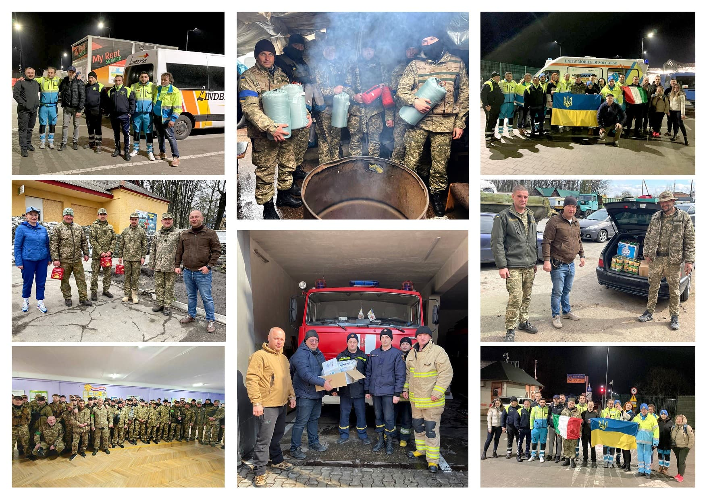

Наша Історія
Сучасна Україна – це європейська країна, демократичний шлях розвитку якої був обраний більшістю громадян. Попри те, що наша країна має тисячолітню історію державності, століттями ми маємо боротися за свою незалежність. Загрозою нашої свободи та права самостійно обирати свій шлях завжди була та залишається Російська імперія, яка й у 21 столітті не хоче відпускати Україну зі сфери свого впливу. Після повномасштабного вторгнення російських військ на територію нашої держави на першій лінії боротьби за право України бути вільною та самостійною знаходяться Збройні Сили Україні та загони Територіальної Оборони. Тому основний напрямок нашої роботи – допомога героїчним українським воякам та військовим медикам. Однак боротьба ведеться не лише на полях боїв. Імперська ментальність російських окупантів направлена на те, щоб знищити українців як націю. Тому від війни потерпає й мирне населення – діти, жінки, літні люди. Багато наших співгромадян залишились без домівок і вимушені шукати притулок якомога далі від зон бойових дій. Ці люди також потребують нашої допомоги – медичної, психологічної, матеріальної. Ми твердо віримо в перемогу українського народу, але не плануємо припиняти нашу волонтерську діяльність навіть після неї. Попереду нас чекає велика робота. Ми плануємо брати участь у відбудові зруйнованих загарбниками українських міст, відновленню економіки, підтримці незахищених верств населення. Дуже сподіваємось, що на цьому шляху нас підтримають всі, хто, як і ми, цінує мир, свободу і право кожного народу самостійно визначати свій шлях. Закликаємо до співпраці окремих благодійників та організації. Ми будемо вдячні за будь-яку допомогу – донати, інформаційну підтримку, створення спільних економічних, освітніх чи соціальних проектів.
Про нас
Благодійний неурядовий фонд «Героям України» був офіційно заснований у 2022 році. Проте волонтерську діяльність ми ведемо значно раніше – з 14-го року. За ці роки ми налагодили тісні дружні стосунки з багатьма європейськими та українськими фондами та волонтерськими організаціями з Києва, Вінниці, Дніпра, Львова, Сум, Тернополя, Івано-Франківська та інших міст. Злагоджена робота всіх підрозділів нашого фонду дозволяє ефективно розподіляти кошти та швидко знаходити оптимальні шляхи вирішення конкретних запитів. Ми вже побудували налагоджену мережу підтримки та продовжуємо працювати над її вдосконаленням, щоб якомога більше військових та цивільних осіб могли отримати допомогу від «Героям України».
Наша команда
Команду організації складають компетентні люди за високим рівнем мотивації, що дозволяє фонду максимально ефективно виконувати запити, що надходять до нашого фонду.
Як ми підтримуємо Україну
На сьогодні благодійний фонд «Героям України» спрямовує свої ресурси на такі пріоритетні напрямки:
Допомога військовим
- Тактичні аптечки
- Бронежилети, шоломи
- Наколінники та налокітники
- Денна та нічна оптика (без прицілів)
- Високотехнологічні засоби зв’язку
- Ноутбуки, планшети
- Генератори
Допомога військовим шпиталям та цивільним лікарням
- Спеціальний транспорт
- Медичне обладнання
- Перев'язувальні матеріали та медикаменти
Гуманітарна допомога біженцям
- Харчові продукти
- Засоби гігієни
- Ліки
- Одяг та взуття
- Необхідні побутові речі
Для отримання допомоги від фонду «Героям України» потрібно зателефонувати за вказаними на сайті номерами або написати офіційний лист-запит та надіслати його на електрону скриньку. Ми відкриті до співпраці з окремими благодійниками, фондами, волонтерськими організаціями та виробниками продукції, яка підпадає під сферу нашої роботи.
Наші досягнення
- 